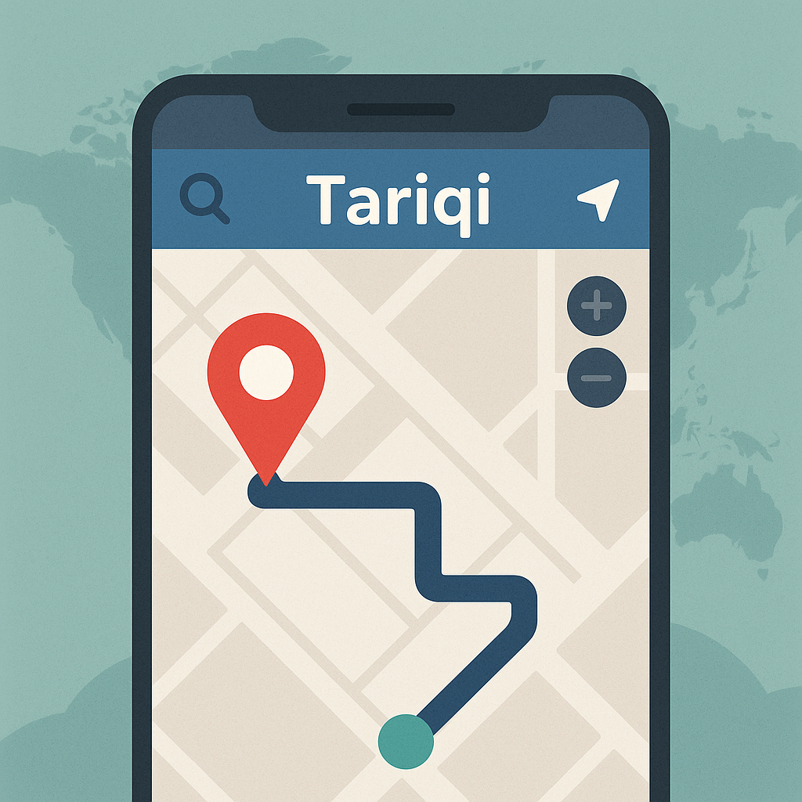
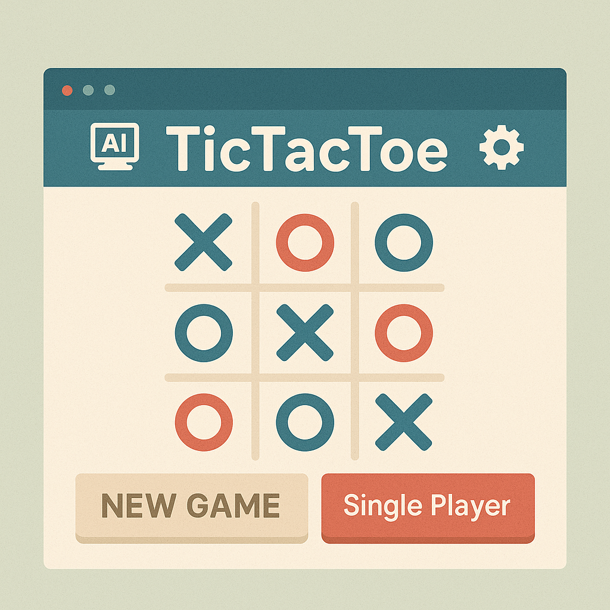
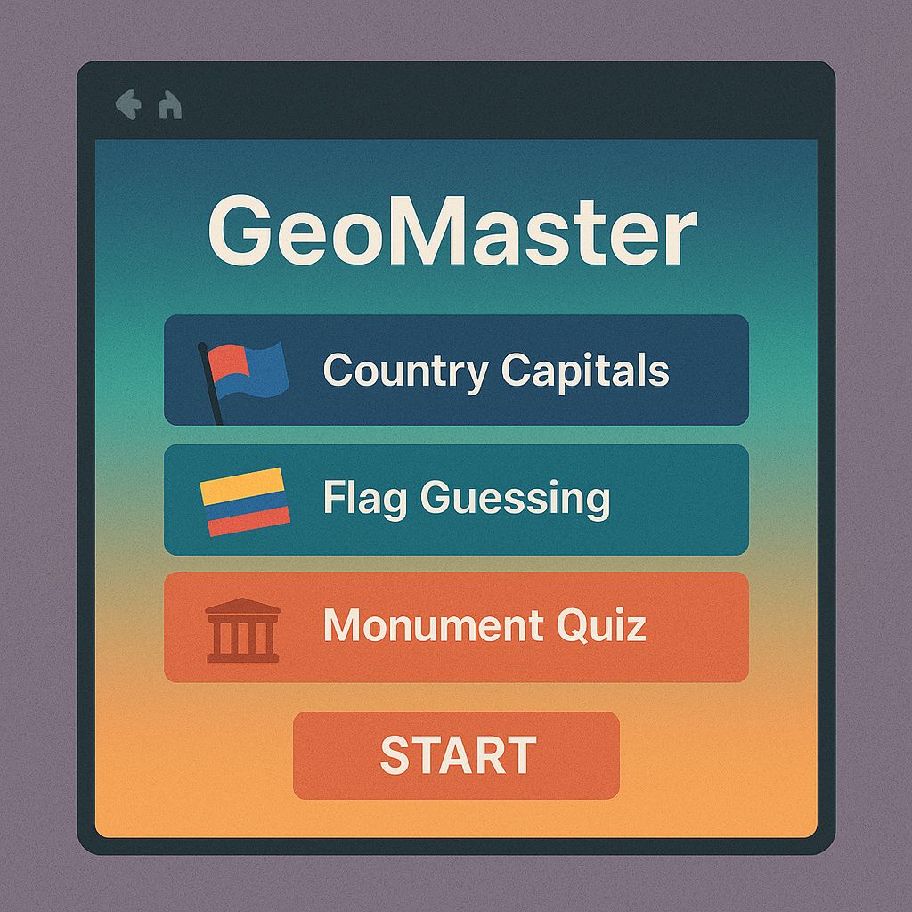

Yousef Isaifan – Software Developer
Computer Science graduate skilled in Flutter, FastAPI, Firebase, and Emakin. Focused on automation, AI, and building real-time systems like the Tariqi Navigation App. Currently developing workflow solutions at Experts Turnkey Solutions.
Latest Projects

Tariqi Navigation
AI-based checkpoint detection system using Telegram data, Firebase, and FastAPI backend.

TicTacToe
Java-based Tic Tac Toe game featuring MiniMax AI, two-player mode, and customizable settings.

GeoMaster
Interactive geography quiz game with multiple modes, including flags, capitals, and monuments.